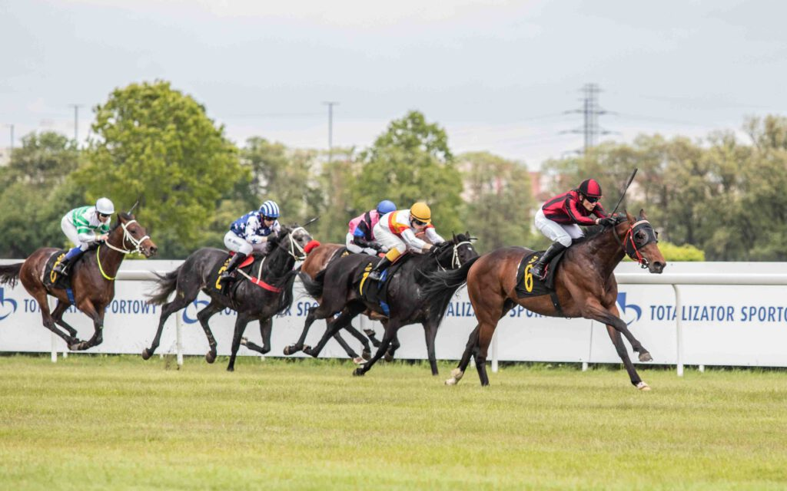

Tor Służewiec jest torem wyścigów konnych. Tor znajduje się przy ul. Puławskiej 266.
Wyścigi konne w Polsce zaczęto dokumentować ok. 1777 roku. Odbywały się one m.in. na ul. Marszałkowskiej czy niedaleko Łazienek Królewskich. Wraz ze wzrastającą popularnością na wyścigi konne w marcu 1841 r. powstało Towarzystwo Wyścigów Konnych i Wystawy Zwierząt Gospodarskich w Królestwie Polskim. Wtedy zaczął takżę powstawać tor na Polach Mokotowskich. W latach 20 XX w. Pola Mokotowskie przestały spełniać wymagania. Nie było tam odpowiednich torów treningowych, sprzęt był nienowoczesny, a stan trybun pozostawał wiele do życzenia.
Poszukiwania dobrego miejsca trwały kilka lat, brano pod uwagę kilka innych lokalizacji (m.in. Okęcie). Teren na Służewiu został zakupiony w 1926 roku. Tor był opisywany, jako "miasteczko wyścigowe". Ze względu na złożoność kompleksu. Architekt toru, hr. Zygmunt Plater-Zyberk, wzorował się na najlepszych europejskich torach wyścigowych. Kompleks zawierał stajnie dla ponad 800 koni, trybuny, które mogły pomieścić ponad 13 tyś. ludzi i tor zajmujący ok. 30 ha, a wszystko to zostało ostoczone parkiem. Sprawiło to, że swego czasu tor na Służewcu był największym tego typu obiektem w Europie.
Przeprowadzka z Pól Mokotowskich trwała od stycznia 1937 i została oficjalnie zakończona 3 czerwca 1939 roku, kiedy odbyła się pierwsza gonitwa na Służewcu. Gonitwy zostały jednak zawieszone ze względu na wybuch wojny. Torowi nic się nie stało, bo na terenie toru stacjonowały oddziały SS. Wyścigi zostały na nowo rozpoczęte w 1946 roku.
Na parku przy torze czasem odbywają się róznego rodzaju wydarzenia. W weekendy odbywają się gonitwy, a sezon trwa od maja do listopada.
